开启时间：
2016年9月13日11:00
活动说明：
1、玩家等级达到80级后就可以到应天府李逵处接受英雄挑战任务；
2、领取任务后，可以按顺序挑战20个关卡的英雄，每周第一次挑战成功有几率获得学习英雄技能的令牌，协助的玩家可以获得人品值；
3、每周结算排行榜，通关关数越高，通关时间越短的玩家可以获得排名奖励。
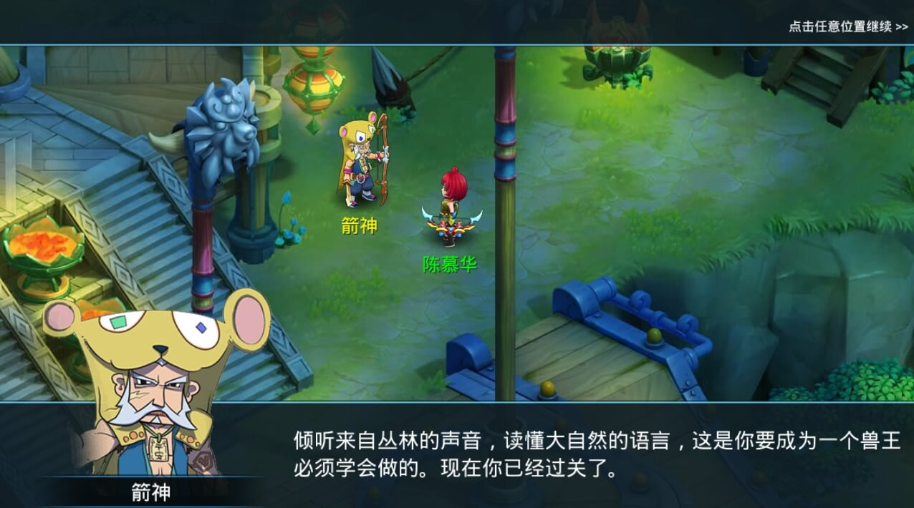
在水Q世界，为了对抗魔物，每个人都在进行自我的磨练，而只有那些把自身技艺修炼得炉火纯青、臻入化境的人，才能突破自身职业限制，获得进阶的力量，穿上英雄套装，挥着那些由神秘物质铸成，蕴含洪荒和星辰力量的武器。
专属武器：
-
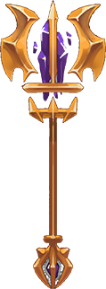
术士·法杖
玄天破邪
-
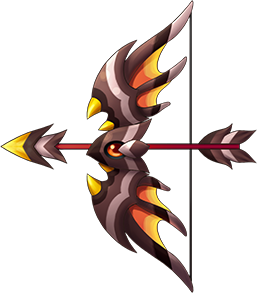
射手·弓
天羽流芳
-
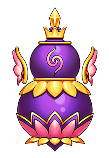
医生·葫芦
星穹圣泽
-
道士·铃铛
无极洪荒
-
武师·拳套
疾风拳套
-
剑客·剑
轩辕夏禹
英雄套装：
-
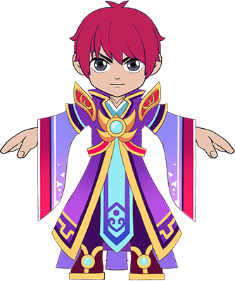
法师套装
-
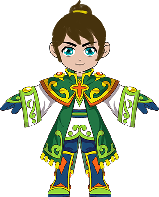
医仙套装
-
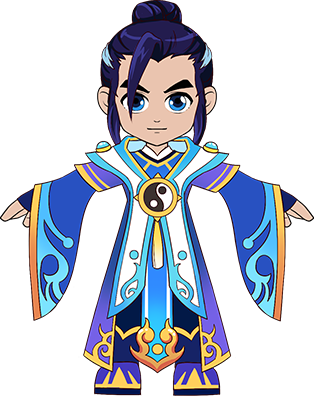 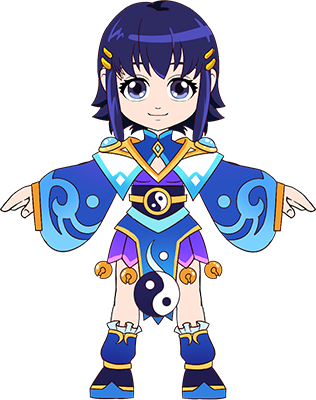
道尊套装
-
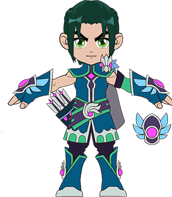
兽王套装
-
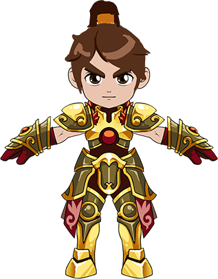 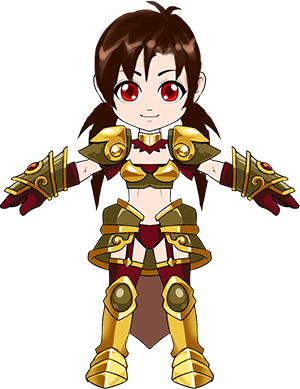
剑侠套装
-
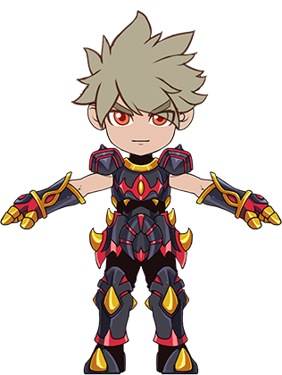 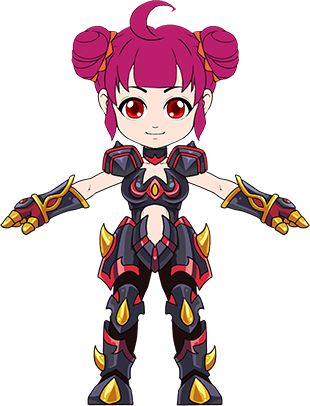
武狂套装
活动1-月饼小能手：
开启时间：2016年9月15日
活动介绍：今年由于店里人手不足，月饼大师都忙不过来了， 想吃月饼的可要自己动手了！
参与条件：等级≥30，单人
玩法介绍：中秋节活动期间，参与以下日常活动时，会有几率掉落月饼材料；梁山任务（完成每个任务）、天师任务（完成每个任务）、惩凶除恶（完成每个任务）、星将下凡（每场战斗胜利）、糖果幽径（每场战斗胜利）
月饼材料包括：面粉、馅料、调料、冰皮、日常活动掉落的材料均为绑定，所制作的月饼将用于提交任务“月饼小能手”。
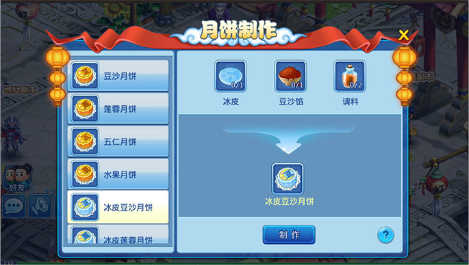
活动2-玉兔的烦恼：
开启时间：2016年9月15日
活动介绍：月宫上的玉兔偷偷溜下凡间，想尝尝人间的月饼，可是最近她的月饼经常被人偷吃，她很是烦恼，如果你帮她把月饼找回来，她一定不会亏待你的！
玩法介绍：与玉兔对话，接取任务【玉兔的烦恼】，然后上交指定的月饼，即可完成任务，每天最多可以接取20次任务，每次任务所需月饼，将从以下随机选择一种：豆沙月饼、莲蓉月饼、五仁月饼、水果月饼、冰皮豆沙月饼、冰皮莲蓉月饼、冰皮五仁月饼、冰皮水果月饼。
活动奖励：
1、主角经验
2、道具奖励：玉兔的谢礼（道具礼包，有几率开出铃铛）
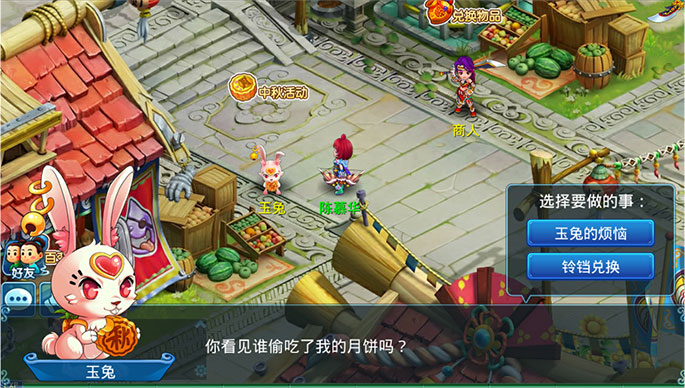
活动3-奸商的灯谜：
开启时间：2016年9月15日
活动介绍：狡诈的黑心奸商把冰皮囤积起来漫天要价，还放话说，只要谁猜对灯谜就可以免费拿冰皮，不想猜灯谜的，可就要花50w银两才能买到一份冰皮了。
参与条件：等级≥30，单人
玩法介绍：每天可以去应天府找到黑心奸商猜灯谜，一共有10道灯谜，每道灯谜均为选择题（答案为四选一）。如果实在猜不出谜底，可以选择“用拳头说话”，进入战斗打败看灯护卫，也可以拿到奖励。
活动奖励：
1、猜对灯谜（或战胜看灯护卫）：大量主角经验、冰皮x1
2、猜错灯谜（或战败看灯护卫）：少量主角经验
3、可直接花50w银两兑换冰皮x1
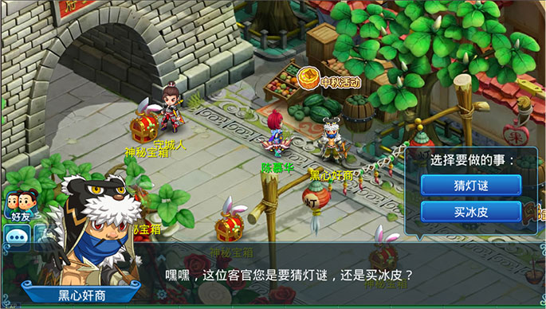
活动4-放开那兔子：
开启时间：2016年9月15日
活动介绍：经调查，原来玉兔的月饼是被一帮恶徒偷走的，他们觉得自己比玉兔更适合呆在月宫陪着嫦娥仙子，但玉兔却因祸得福，收到了许多人送的月饼。结果他们恼羞成怒，抓走了玉兔，快来人救救玉兔！
参与条件：组队
玩法介绍：与活动NPC“疾心的玉狼”对话，进入副本，点击可自动寻路。通关上一关的NPC，才会刷出下一关的NPC。
活动奖励：每通关一个关卡，可以获得大量经验奖励，通关第四个关卡，还可以额外获得：玉兔的馈赠（道具礼包，更大几率开出铃铛）每个关卡可以重复挑战，但每个关卡每天只能获得一次奖励。由于重复挑战无法获得奖励时，通关某个关卡后提示：“由于每天只能获得一次通关奖励，你无法再获得奖励。”
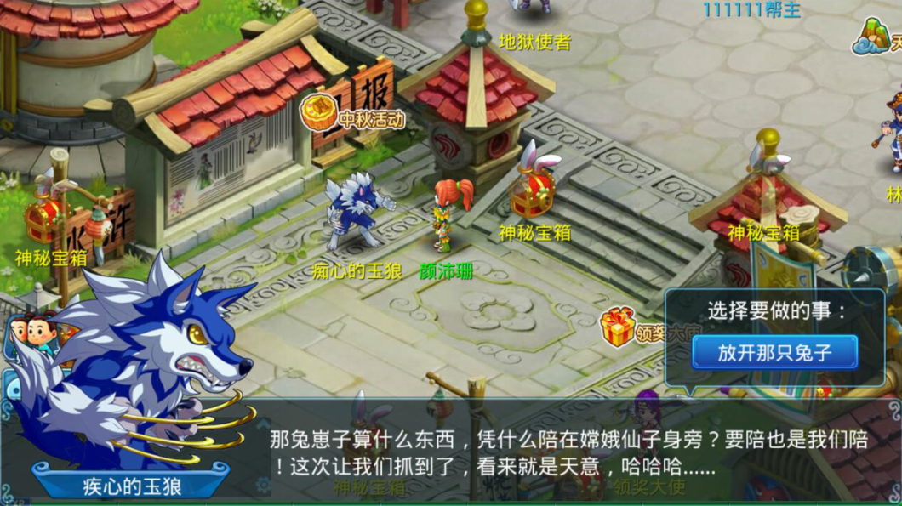
活动5-铃铛换换换：
开启时间：2016年9月15日
活动介绍：通过参与其他中秋活动收集专属道具：铃铛，集齐一定数量的铃铛后，可兑换珍稀道具和珍稀召唤兽“玉兔”。
兑换方法：与应天府活动NPC玉兔对话，选择“铃铛兑换”选择自己想要的道具对话。
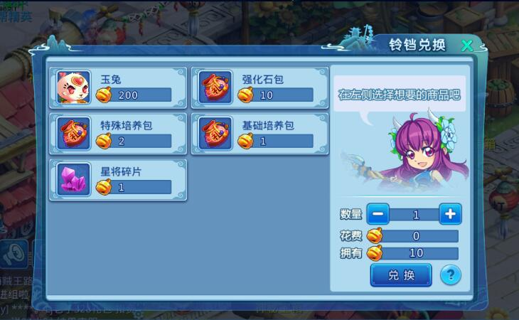
开启时间：
2016年9月13日11:00
活动说明：
每个职业在达到80级后，接受进阶职业引导人的任务，完成任务后，解锁新的技能，提升自己的力量。
英雄技能：
1、转职技能-法师：
行为模式更加多变，自己不再是无脑输出，敌人也无法快速击杀术士了。
-
魔力炸弹
-
魔力盾牌
-
法术反射
-
魔力引导
2、转职技能-医仙：
保护队友的方式更多变。
-
咒术反弹
-
清心诀
-
医者仁心
-
疾病传播
3、转职技能-道尊：
可以吓跑强力宝宝。
-
石化咒
-
法力吸收
-
灵魂标记
-
 驱兽傀儡
驱兽傀儡
4、转职技能-兽王：
控制能力更强，并且和宠物之间的配合更加密切。
-
沉默攻击
-
睡眠陷阱
-
适者生存
-
灵魂联结
5、转职技能-剑侠：
保护队友的能力更强，在PK中相对于输出更接近一个辅助。
-
以逸待劳
-
 金刚护体
金刚护体 -
声东击西
-
火力吸引
6、转职技能-武狂：
爆发力更强。
-
破甲一击
-
暗杀
-
隔山打牛
-
连击强化
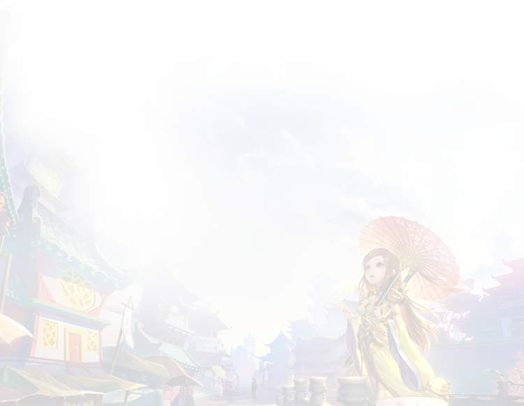